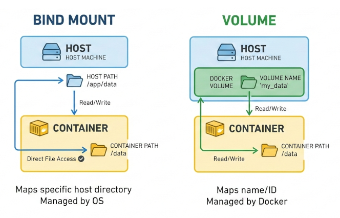
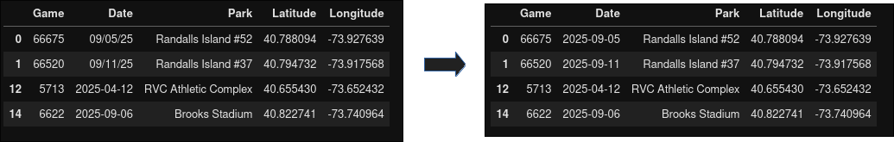
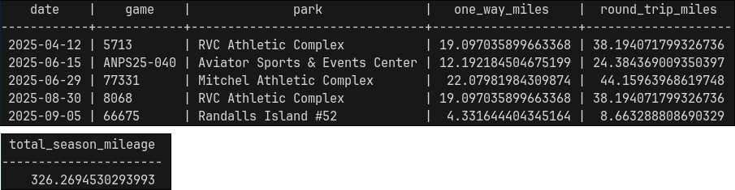

Docker Novelty
My first direct experience with dependency hell happened about a year ago during a pediatric data science challenge. At that time, I had never touched Docker. Version control was messy, managing environments across four teammates was difficult, and syncing code for submissions felt laborious. We performed well in the first round, but our code failed to run properly in the second round. The real issue? We were running Python code against a submission script that kept evolving during the competition. Keeping up with the dependency changes and script updates was beyond my comfort zone at the time.
About five months ago, I started using Docker while building my website. I could start and stop a container, but I truly didn't understand the process. It worked and that was good enough. Over the past month, I've focused intentionally on Docker container management through KubeCraft. To solidify my understanding, I built something practical. A project I would actually use instead of just experimenting with.
A Practical Reason to Learn
A little bit about me: I played football competitively from a young age and became a referee about six years ago. Playing and officiating are vastly different — you need thick skin as an official! Rules change annually in subtle ways, and players and coaches don't always understand the intricacies. Applying the rules in real time is an art because the game is fast and dynamic, decisions must occur in split seconds, and you must manage both your emotions and others' effectively. It's also a game of angles and we don't always have the perfect one.
To advance to higher officiating levels, specific qualifying matches must be tracked and submitted. The challenge is that assignments come through five different mobile apps. At the end of each year, consolidating match data and calculating mileage becomes tedious. Instead of manually reconciling everything each season, I decided to build a Dockerized workflow to manage it.
The Goal:
- Import match data from a CSV file
- Clean the data in Jupyter
- Load data into a PostGIS database
- Calculate round-trip miles from home to each park
- Sum total season mileage
Architecture Setup
Docker files are stored on a writable container layer that sits on immutable image layers. Data is not persistent when a container is destroyed. Docker has four mount types for data persistence.
- Bind mount: links a folder on your physical machine directly to the container. Easy, but the container becomes dependent on your local file system structure.
- Volume mount: fully managed by Docker and not tied to a specific folder on the host machine. This setup is more portable and self-contained.
- tmpfs mount: files stored on the host's memory. Suitable for temporary memory storage such as sensitive data. Used for Linux containers.
- Named pipes: used for communication between the Docker host and container. Primarily used for Windows containers.

I chose volume mounts for their portability. My setup uses two containers: Jupyter and PostGIS. They communicate over a shared Docker network and volume. For example, editing a SQL script inside Jupyter, /home/jovyan/app/parks2025.sql, makes it accessible inside the PostGIS container at /tmp/parks2025.sql. Two isolated services share the same volume, but mounted at different paths.
The Principle of Least Privilege
One of the most important and difficult lessons for me was permissions. The principle of least privilege means giving minimum access rights to users and processes to perform their tasks. Conceptually simple, but operationally frustrating. I repeatedly hit permission denied errors because I didn't understand user management.
If no USER is defined in a Dockerfile, the container defaults to root. However, root privileges are typically only needed during system package installation, otherwise the container should run as a restricted user. In Jupyter's Docker images, the default user is jovyan with UID 1000 and GID 100. By explicitly defining USER 1000:100, the container runs with limited permissions while maintaining proper volume access. It was a foundational lesson in container security and reproducibility. This article provides a great overview: Understanding the Docker USER Instruction.
Project Setup
Six core files power this project, all available in my GitHub Lab repo.
- requirements.txt: installs numpy and pandas into the Python environment.
- Dockerfile: customizes the image and configures the user. Root privileges are temporarily escalated only when necessary, then dropped to the default jovyan user (UID 1000, GID 100) to align with shared volume permissions. Vim is installed as a text editor using sudo, but conda/pip dependencies do not require elevated privileges. For additional runtime configurations, refer to the Docker Stacks documentation.
- docker-compose.yml: acts at the orchestration layer. It connects the containers through a shared network, manages volumes, and injects credentials via environment variables.
- parks2025.sql: contains all spatial logic, including geography calculations, distance computations, and aggregations. The PostGIS documentation was essential for understanding the difference between geography and geometry types.
- .env: manages database credentials. No hard-coded passwords. In practice, this file would be listed in .dockerignore for sensitivity, but it is included in the repo for demonstration purposes only.
- .dockerignore: prevents unnecessary files from being tracked and keeps sensitive configurations private.
1. Build the Image and Start the Container
Now that the project files are set up, let's spin up the containers. First, we build the images and run the containers in detached mode, then verify that the shared volumes are active. Running whoami confirms that the jovyan user is active inside the Jupyter container.
#build container in detached mode
docker-compose up -d --build
#shared volumes
docker exec -it my-jupyter bash
docker exec -it my-postgis bash
2. Data Cleaning in Jupyter
Run docker logs my-jupyter to view the custom URL Docker generates for accessing JupyterLab. If you open http://localhost:8889/lab, you will need to paste the authentication token from the container logs. Alternatively, you can hardcode a token in the docker-compose.yml file so the same token is used every time the container starts. For example, http://localhost:8889/lab?token=my-token, passes the authentication token directly through the URL. This configuration is commented out for reference in my docker-compose.yml.
Once inside Jupyter, create a new notebook and load the CSV file. The Date column contains inconsistent formats, so it is standardized to yyyy-mm-dd. I found innaccuracies when batching GPS coordinates for the parks and ultimately verified them manually. I'm not in the geospatial domain, so I'm sure there are more scalable approaches.
Note: PostGIS expects coordinates in Latitude then Longitude, which differs from how we typically read coordinates on a map (Longitude, Latitude).
#games.ipynb
import pandas as pd
df = pd.read_csv('sample_miles2025.csv')
#refine and reformat columns
df = df[['Game', 'Date', 'Park', 'Latitude', 'Longitude']]
df['Date'] = pd.to_datetime(df['Date'], format='mixed')
df_clean = df.sort_values(by='Date', ascending=True).reset_index(drop=True)
#export df
df_clean.to_csv('imports/df_sorted.csv', index=False)

3. Spatial Analysis with PostGIS
For spatial processing, I used psql (PostgreSQL interactive terminal). If you prefer a GUI, then use pgAdmin. Once psql is initiated, connect to the postgis database, and execute parks2025.sql.
docker exec -it my-postgis psql -U admin -d postgres
\c postgis
\i /tmp/parks2025.sql
Coordinate Handling
To perform distance calculations, coordinates must be converted into a geography type. Using SRID 4326 ensures that the data aligns with the WGS84 coordinate system, which represents coordinates in decimal degrees.
SET geom = ST_SetSRID(ST_MakePoint(longitude, latitude), 4326)
- 4326 = WGS84 coordinate system
- Coordinates are in decimal degress (DD)
- Penn Station = 40.750638 -73.993899
The geography type treats the Earth as a sphere and returns distances in meters. Multiplying by 0.000621371 converts meters into miles. The final output contains the matches ordered by date, along with one-way and round-trip distances. Total seasonal mileage is calculated and exported into a CSV file. If desired, run docker cp my-postgis:/path/to/file.csv to copy the file to your localhost.

4. Shut It Down
When finished, containers, networks, and volumes can be removed entirely. Run the following:
docker-compose down -v
5. Portability
One of Docker's biggest advantages is reproducibility. An image can be rebuilt from scratch at any time. GitHub Container Registry (ghcr.io) allows container images to be stored and shared. In summary, a personal access token is created and then used to authenticate with ghcr.io. From there, the workflow typically involves tagging the image, building and pushing it to the registry, and verifying that the image exists remotely. It will be available as a private image that can be pulled and run on any computer.
Lessons Learned
This project took longer than I anticipated, largely because it took me time to understand user management and permission configurations. Discovering that the jovyan user already existed with a UID 1000 and GID 100 was part of the learning curve. Referencing Docker and Jupyter documentation clarified much of the confusion. Documentation isn't a fallback, but rather a starting point.
This project wasn't just about match and mileage tracking. It was about building a portable data pipeline, managing environments cleanly, applying least-privilege security principles, and learning about spatial analytics. Refereeing teaches you that mistakes are inevitable, but growth comes from reviewing the match and improving the next call. Building systems is no different: each error, misconfiguration, and rebuild is just another chance to get the next decision right...hopefully :)